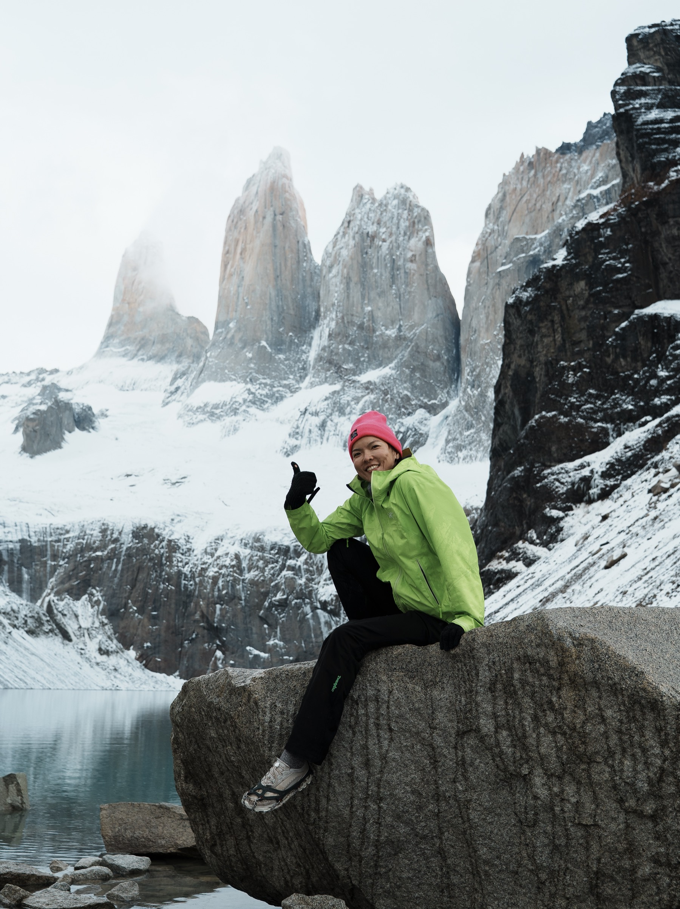
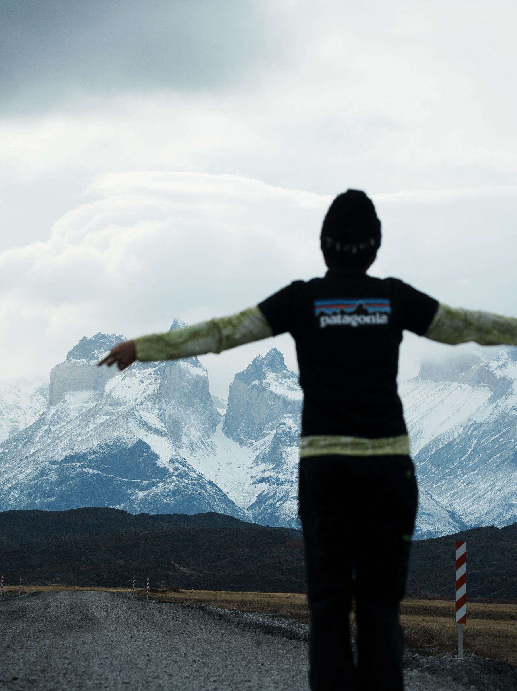
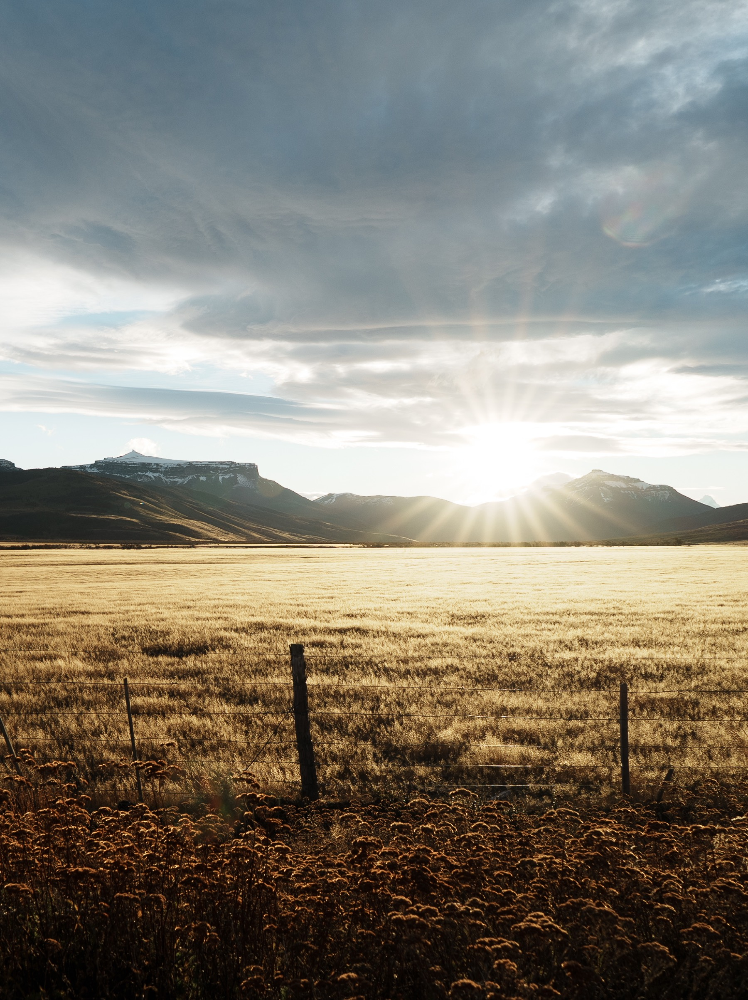
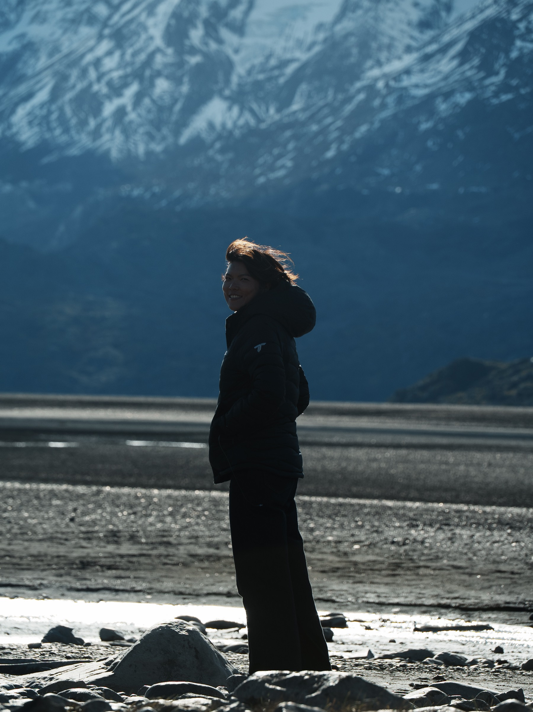
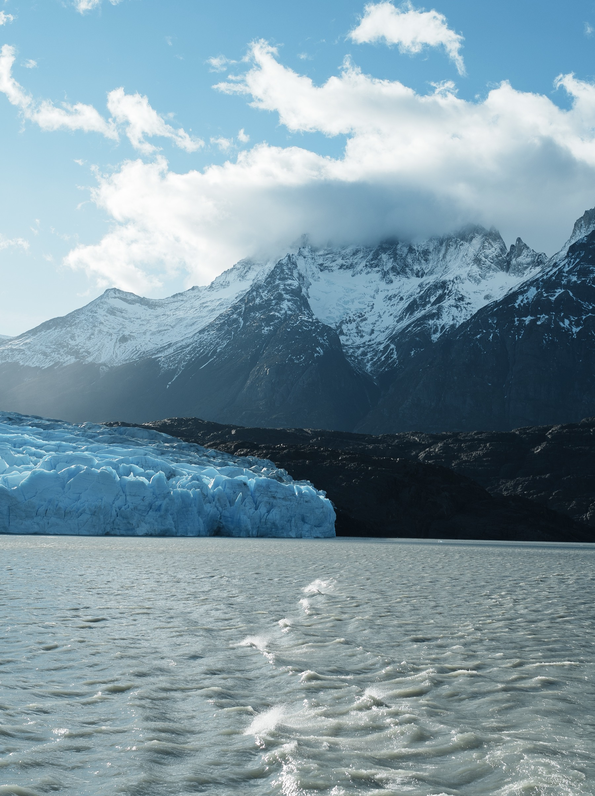

Chapter 02 · Chile
Patagonia
巴塔哥尼亞
MAY 5 — MAY 20 · DAY 15–30 · 世界的盡頭
Chapter 02 · Chile
巴塔哥尼亞
MAY 5 — MAY 20 · DAY 15–30 · 世界的盡頭
世界的盡頭，風強到讓人站不穩。Torres del Paine 的藍色冰川像是另一個星球。這裡的天氣一天四季——早上陽光普照，下午暴風雪。行程要排鬆，才能應對大自然的任性。
The end of the world. Fierce winds, electric-blue glaciers, and three granite towers rising from the plain. Plan loose, bring every layer you own.
The Route · 一路向南,到世界的盡頭
這座山
teach you to be humble.
百內三塔 22KM · 直線上升 1000M

Mirador Las Torres · 第四個小時,見到三塔的那一刻
前兩個小時的我健步如飛還在那邊唱秋,爬到後面你只聽到自己的呼吸聲還有雨聲,世界可以這麼安靜。第四個小時見到 Torres del Paine 的那刻,太震撼了。
— Alice & Ryan 的日記
老實說:60 分。風浪大到 1/4 的人暈船。反而隔天隨便進公園逛逛——結果,太美麗了,金色的大地還有銀河。免費的比船票貴的美😂
紐西蘭情侶說智利 “Same but different”。法國夫妻休假六個月走到第五個月,問她想家嗎——她說一點也不,世界好有趣。
Hotel Altiplanico Sur 沒網路(Booking 寫的是真的),但有燙到不行的隱藏版熱水池。Explora 我目前還住不起,但這片土地我會再來的。

Ruta Y-290 · 風大到站不穩,也要張開手



在這裡,我們一點都不奇怪。
有太多的人做了這個決定,在看看這個世界。
— 記錄故事 · 2026.05.15
The Essentials · 攻略